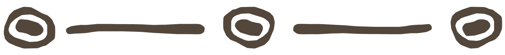

OM MIG


Hvem er jeg?
Jeg hedder Benjamin Vive Høgedal, 24 år, multimediedesigner studerende på erhvervsakademi i Aarhus. Jeg arbejder både med webdesign, UX og indhold til sociale medier. For mig handler det ikke om at lave "flotte hjemmesider", men om at skabe løsninger med retning og formål.
Det visuelle skal skabe stemning og identitet, men det tekniske fundament skal være gennemtænkt og hurtigt.
Min tilgang
Jeg starter altid med at forstå problemet, før jeg begynder at designe på løsningen. Det betyder research, snak med brugerne, og en del skitser, før noget som helst bliver lavet i Figma.
Jeg kan godt lide at være med i det hele - ikke kun min egen del. Jeg har aldrig bare sendt andre af sted med at kode, mens jeg holder mig til design; jeg vil forstå det, der sker undervejs, fordi det er sådan jeg lærer og bliver skarpere.
Jeg kan godt lide at eksperimentere på egen hånd ved siden af skolen - det giver mig plads til at prøve ting af, som jeg ikke nødvendigvis ville gøre i et gruppeprojekt.

2018 - 2019 2022 - 2025 2026